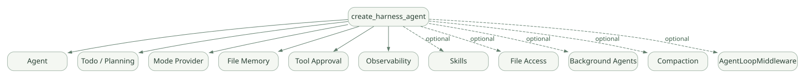

확장과 운영 / 단원 07
운영 기능을 합성하고 반복 범위 정하기
기본·선택 기능, 외부 Loop, Skills·MCP·CodeAct
먼저 연결해 보기
Harness는 기본 Agent에 계획·모드·파일 메모리·승인 등을 조합하는 구성입니다. 기능이 존재하는지와 기본으로 켜지는지는 다르며 Python과 .NET의 설정도 구분해야 합니다.
Tool Loop와 Agent 전체 재실행 Loop를 비교한 뒤 Skills·MCP·CodeAct·Background Agents를 연결합니다. 승인 대기 응답에서 반복을 멈추는 조건, 스크립트 실행기와 실행 환경의 준비 범위를 확인하세요.
읽는 관점기본 기능과 Opt-in 기능, 반복 내부와 반복 외부를 구분해 보세요.
17. Harness Agent의 구성과 일반 Agent와의 차이#
17.1 Harness란 무엇인가?#
일반 Agent가 '모델 + Instruction + Tool + Context'라는 기본 골격이라면, Harness는 업무 지속성에 필요한 운영 기능을 한 번에 합성한다. [D04]
넓은 도식은 가로로 이동하며 읽을 수 있습니다. 도식 크게 보기 ↗

원문에 수록된 학습용 도식입니다. 노드·화살표·분기 라벨을 보존해 다시 배치했습니다. 세부 조건과 예시·구현의 구분은 앞뒤 본문을 함께 읽으세요.
도식 원문 보기 (Mermaid)
flowchart TD
H[create_harness_agent] --> A[Agent]
H --> T[Todo / Planning]
H --> M[Mode Provider]
H --> F[File Memory]
H --> AP[Tool Approval]
H --> OBS[Observability]
H -. optional .-> SK[Skills]
H -. optional .-> FA[File Access]
H -. optional .-> BG[Background Agents]
H -. optional .-> CP[Compaction]
H -. optional .-> LO[AgentLoopMiddleware]17.2 생성 예시#
from agent_framework import create_harness_agent
from agent_framework.openai import OpenAIChatClient
agent = create_harness_agent(
client=OpenAIChatClient(model="gpt-4o"),
name="semiconductor-researcher",
harness_instructions="Use tools deliberately and report verified results.",
agent_instructions="Analyze approved semiconductor reference material only.",
)harness_instructions와 agent_instructions는 서로 다른 계층이다. 일반적으로 전자는 Harness 운영 방식, 후자는 도메인별 임무 정의에 가까운 용도로 이해할 수 있다. [D04]
17.3 무엇이 기본 활성화되나? (Python 중심)#
| 기능 | 기본/설정 | 비고 |
|---|---|---|
| Todo tracking | Harness 기본 | 일정/완료 상태 관리 |
| Plan/Execute Mode | Harness 기본 | 동작 모드 관리 |
| Session File Memory | Harness 기본 | 기본 파일 저장 경로 확인 필요 |
| Tool Approval | Harness 기본 정책 조합 | 자동 승인의 범위 점검 |
| OpenTelemetry | Harness 기본 구성 | 민감 로그 반출 주의 |
| Context Compaction | 설정 조건에 따라 | Token limit/strategy 설정 필요 |
| Skills | Python에서는 Opt-in | skills_paths/Provider |
| Shared File Access | Opt-in | file_access_store 제공 |
| Background Agents | Opt-in, 일부 실험적 | 위임·완료 회수 별도 |
| Shell | 별도 패키지/옵션, 실험적 가능성 | 격리·정책 필수 |
| Bounded Loop | Opt-in | loop_should_continue 등 |
위 표는 공식 Harness 개념 문서와 고정 버전 소스의 설명을 조합한 것. Python과 .NET의 기본값이 완전히 같지 않다. [D04][S09]
17.4 Harness의 장점과 위험#
장점: 긴 조사에 필요한 많은 기능을 개별 구현하지 않고 시작할 수 있다.
위험: 기본 제공 Tool과 저장 경로를 검토하지 않고 기업용 호스트에 올리면 예상하지 못한 파일 쓰기·검색·통신이 발생할 수 있다.
따라서 사내 프로토타입이라면 먼저 사용 가능한 Tool 목록, 저장 디렉터리, 모델 엔드포인트, 외부 통신 경로를 문서화한다.
18. Agent Loop의 두 층: Tool Loop vs 재실행 Loop#
이 부분은 타 프레임워크와 비교할 때 특히 중요하다.
18.1 Tool Loop#
FunctionInvocation이 모델 응답에서 함수 호출 요청을 발견하고 실행 결과를 돌려 주는 동안 반복된다. 하나의 agent.run() 안에서 여러 차례 모델 호출과 Tool 호출이 생길 수 있다. [D06][S03]
18.2 AgentLoopMiddleware#
_harness/_loop.py에 존재하는 AgentLoopMiddleware는 별개로 Agent 전체 실행을 반복할지 판단한다. 공식 소스 설명상 predicate 기반, judge client 기반의 형태가 존재하며, 실행 횟수 상한, 다음 메시지, 평가 결과 등에 따라 반복할 수 있다. [S07][S09]
# 학습용 의사코드: 실제 메서드 본문 아님
async def outer_agent_loop(task):
for iteration in range(allowed_iterations):
response = await run_one_agent_request(task)
if contains_pending_approval(response):
return response # 승인 요청을 사용자에게 넘긴다.
if not await should_continue(response):
return response
task = make_followup_message(response)
return response18.3 완료 평가의 위험#
- LLM-as-a-judge가 잘못 판단할 수 있다.
- 반복마다 Tool 호출 비용과 지연이 쌓인다.
max_iterations=None같은 무제한 설정은 장기 무한 반복 위험이 있다.- 이미 수행한 부작용 있는 Tool을 다시 실행할 수 있다.
- 승인 대기 중인 응답을 강제로 반복해서는 안 된다. 소스 개발 가이드는 승인 요청 발견 시 외부 루프를 탈출해 호출자에게 전달하는 안전 처리를 설명한다. [S09]
19. Skills, MCP, CodeAct, Background Agents#
19.1 Skills#
Skills는 SKILL.md와 부속 자료·스크립트로 도메인별 작업 절차를 제공하는 방식이다. Python은 SkillsProvider와 파일/인라인/클래스 기반 Skill 소스 등을 지원한다. [D17]
점진적 공개(Progressive Disclosure)
Skill 이름·설명만 먼저 표시
↓
필요해지면 load_skill
↓
관련 파일이 필요하면 read_skill_resource
↓
허용된 스크립트가 있으면 run_skill_script이 구조는 모든 Skill 내용을 처음부터 Context Window에 넣지 않아도 된다는 장점이 있다.
개발 시 주의: skills_paths만 설정한 경우 스크립트 실행기가 자동 제공되는 것으로 가정하지 않는다. 파일 스크립트를 실행하려면 별도의 안전한 script_runner 구성과 승인 정책이 필요할 수 있다. Skill Tool도 승인을 요구하는 기본값을 가진다. [D17]
19.2 MCP#
MCP는 Agent Framework와 외부 Tool/Resource 제공자를 연결하는 프로토콜이다. MCP Tool의 이름, 입력 스키마, 원격 서버 권한, 승인 규칙을 서로 구별해야 한다.
python-1.24.0에는 로컬 MCP Tool/Prompt의 목록에 없는 항목에 대한 기본 승인 모드를 설정하는 기능이 추가되었다. 명시적으로 never_require_approval을 설정했다고 모든 신규 Tool이 안전하다는 뜻은 아니다. [R01]
보안 설계: 허용 Tool 목록을 최소화하고 서버의 실행 권한을 별도로 제한한다. Model-visible Tool 스키마는 서버 자체의 파일/네트워크 권한을 제한하지 않는다.
19.3 CodeAct#
CodeAct는 모델이 여러 도구 호출을 코드로 작성·실행하는 접근이다. 일반 Function Calling과 다르게 코드 실행 환경, 사용 가능한 라이브러리, 파일/네트워크 접근과 샌드박스 설계가 핵심이다. 제공자마다 구현·격리 기능이 다르다. [D18]
19.4 Background Agents와 Background Responses#
- Background Agents: 별도의 하위 Agent에게 작업을 위임하고 결과를 회수하는 패턴.
- Background Responses: 한 모델 공급자의 장시간 요청을 계속 처리하거나 재접속하는 패턴.
두 용어는 이름이 비슷하지만 다르다. Harness 문서도 명시적으로 구분한다. [D04]